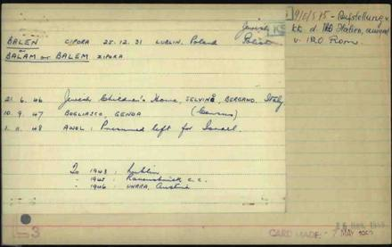
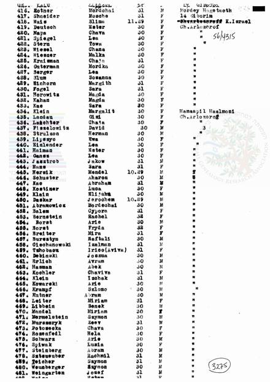
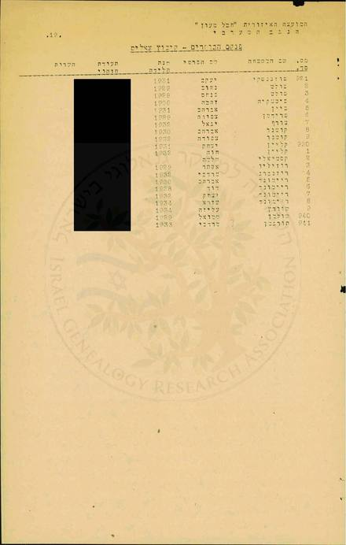

ידוע בוודאות מאומת
סולם הוודאות ומונחי המחקר — מה המילים האלה אומרות
עץ המשפחה
גלילה אופקית בתוך המסגרת מציגה את העץ במלואו, וכפתורי ההגדלה שמעליה מגדילים את הכתב; בהדפסה הוא מקבל עמוד לרוחב משלו.
פתיחת העץ בעמוד נפרד ↗ציר הזמן
כל אירוע מציין עד כמה הוא מבוסס, ומפנה אל המסמך שעליו הוא נשען.
- לפני 1928דוביינקה · לובומל
מנדל בלם, בן זכריה החייט וחיה מדוביינקה שעל הבוג, נושא את זלדה (סוניה), בת יעקב וחיה פרימר מלובומל. בלובומל — חנות מכולת.
- 1932לובומל
צפורה נולדת בלובומל — השנייה מבין שבעה: משה, צפורה, רייזל, שמואל, אשר, ישראל וחיים. 1932 — כך מסרה היא עצמה; ברשימות שאחרי המלחמה — 1931. השנה שבה נולדה בפועל — טעון אימות.
- 1942מאצ'יוב
כשמתחילים לארגן את הגטאות, עוברת המשפחה לקרובים במאצ'יוב. ב"אובלווה" נאספים האם והילדים אל בית הכנסת; האב, משה, סבא וסבתא מסתתרים. לפנות בוקר האם מוציאה את צפורה דרך החלון, והשומר חושב שהיא "גויה". למחרת מוציאים את כולם להורג, מחוץ לעיר.
- 1942לובומל
האב, משה וצפורה חוזרים לגטו לובומל, ובורחים ממנו בלילה, ימים ספורים לפני חיסולו.
- 1942–1943
ביערות ובגרנות. בחורף נרצח האב; כעבור כשבוע — משה, בידי אוקראינים. צפורה, לבדה, נמסרת למשפחת איכרים אוקראינית שמציגה אותה כנכדה, ונשארת אצלם עד שנה אחרי השחרור.
- 1945לובלין · לודז'
יהודים מוציאים אותה ממשפחת האיכרים; בלובומל — כחמישים יהודים; אחר כך "בלובלין או בחלם", ובית הילדים בלודז'; משם, עם מדריך, "דרך צ'כיה לאוסטריה" ולאיטליה.
- סוף 1945סלווינו
מס' 1 ברשימת שמונים הילדים הראשונים בבית סלווינו: "Balam Zipora", אב "Mandai", אם "Salda", לובומל, 1931.
- 21.6.1946סלווינו
רשומה בבית הילדים היהודי בסלווינו, ברגמו; ב-10.9.1947 — בבוליאסקו שליד גנואה.
- 1947קפריסין
מפליגה באוניית המעפילים "חיים ארלוזורוב" ומגורשת לקפריסין; ברשימת המכסה השנייה של ילדים יתומים שהועברו ממחנות קפריסין: "Balem Cypora", 1931 — ובאותו עמוד "Kutner Abram". ובעיתון, במרץ 1947, ברשימת מעפילי "חיים ארלוזורוב": "באלן צפורה, 16, לובומיל".
- 1952צאלים
חברת קיבוץ צאלים, כבר בשם קוטנר — בשורה שאחרי אברהם בפנקס הבוחרים. לפי בתם, נישאו ברבנות בבאר שבע וחזרו לקיבוץ באותו ערב; במרץ 1952 — ברשימת הנרשמים לנישואין שם ("הצופה", 18.3.1952).
- שנות ה-50צאלים
אחרי שנה בכפר רופין ושלוש שנות צבא — לצאלים, "כקבוצת נח"ל"; "ושם נשארתי 11 שנה כחברת משק".
- 1990
מוסרת ליד ושם עדות מוקלטת על קורותיה — 13 עמודי תמליל.
- 1999באר שבע
- 27/28.1.2006באר שבע
נפטרת, בת 73 — כ"ח בטבת תשס"ו (ליל שבת). נקברה עם אברהם בבית העלמין הישן של באר שבע; על המצבה: "לזכר הוריהם ובני משפחתם שנספו בשואה".
המסמכים
לחיצה על תמונה פותחת את הסריקה המלאה; "בדוח" מוביל אל הקריאה המלאה של המסמך.



המקורות
כל קביעה בדף הזה נשענת על אחד המסמכים שלהלן. כל ערך מוביל אל אינדקס המקורות שבדוח, ושם — קישור אל הרשומה בארכיון שממנה נלקחה ואל עותק שמור שלה.
- יד ושם — שלושה-עשר דפי עד שמילאה צפורה, 1999
- ארכיון ארולסן — כרטיס שירות האיתור, על פי רשימת IRO איטליה
- הארכיון הציוני — רשימת עצורי קפריסין, 1947
- ארכיון המדינה — פנקס הבוחרים, קיבוץ צאלים, 1952
- Sciesopoli — רשימות ילדי סלווינו
- עץ המשפחה ב-MyHeritage
- BillionGraves — המצבה בבאר שבע
- יד ושם — עדותה המוקלטת, 1990 (התמליל)
- JewishGen — מרשם הקבורה בישראל (JOWBR)
- מפי בתה, 2026